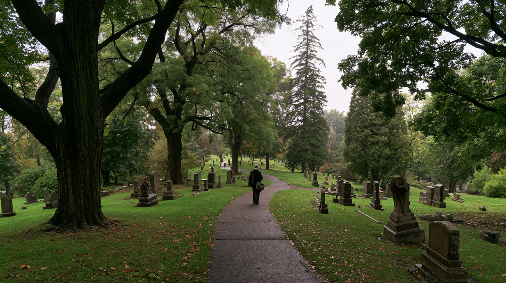
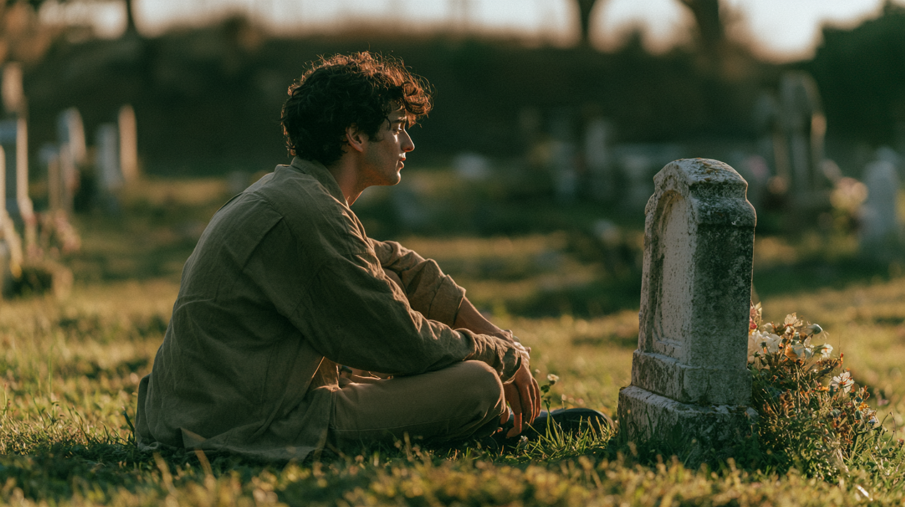
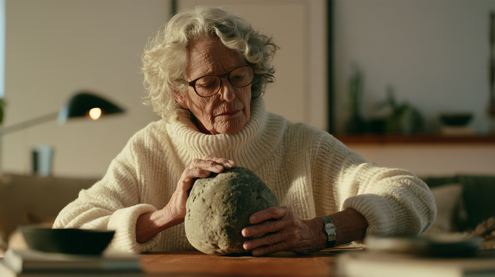
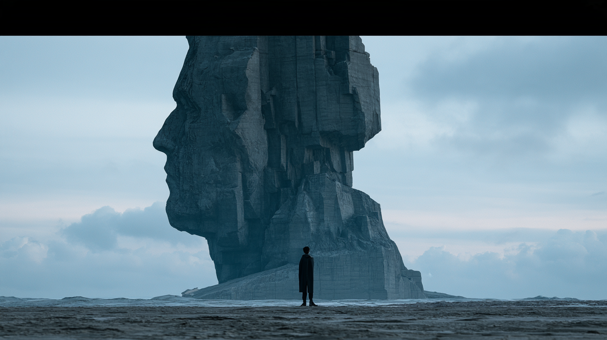
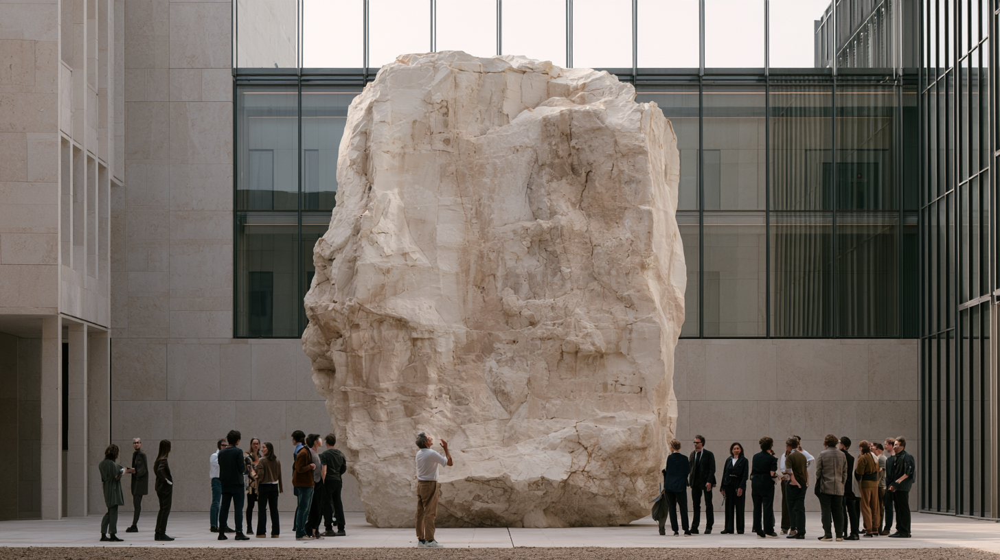

Oracle
I took a shortcut through Memorial Park and one of the tombstones told me to fuck off.

The encounter
The strange part isn't that the dead can speak. It's how ordinary the encounter has become.
You weren't visiting anyone. You were taking a shortcut. The cemetery was simply part of the world, and one of its inhabitants still had enough agency to object.

The object
A tombstone already does something remarkable. A piece of stone becomes inseparable from a person, a place, visitors, stories and time.
It doesn't merely contain an inscription. Meaning accumulates around it.
It acquires history.
A wedding ring after fifty years isn't equivalent to the same ring bought this morning. A house key after a lifetime isn't just brass. A monument can become the physical anchor for an invisible history.
Authorship
If an object can become a way into someone's history, the person should have a relationship with that future while they are still alive.
What do I preserve? What remains private? Who may ask? What can my representation refuse? What happens when it doesn't know?

Provenance
History isn't only personal. Objects, homes, institutions and places accumulate ownership, decisions, transfers, mistakes, rituals, reputations and memory.
The physical thing can remain while the world around it changes what it means.

Agency lets that past speak.
Institution
Now move beyond the graveyard.
Imagine a physical monument at the center of an institution. Not a plaque describing its history. Not a chatbot on its website. A place where its accumulated history can be encountered.
Who made this decision? Why did this disappear? What happened here thirty years ago? What did the people inside believe at the time?

It is where the history lives.
An heirloom.
A house.
An institution.
A city.
A culture.
The oracle isn't necessarily the object, and it isn't necessarily the agent. Oracle describes the relationship: a particular history, anchored to something in the world, made available for conversation.
Objects don't just exist in time.
They accumulate it.
What if that history could answer back?
Oracle is a visual thesis, not a proposal for digital tombstones. The graveyard is useful because identity, place, memory, permission and time are already visible there. The same question can extend anywhere history becomes attached to a person, object or place.